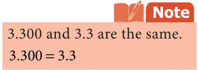

Solution
Compare 99.56 and 99.65 Here the whole number parts of the given two numbers are equal. Comparing the digits at tenths place, we get \(5 < 6\).
Therefore, \(99.56 < 99.65\)
Example 1.15 A standard art paper is about 0.05 mm thick and matte coated paper is 0.09 mm thick. Can you say which paper is more thick?
Solution
Compare 0.05 and 0.09 By using the steps given above, the integral parts and tenths places are equal. By
comparing the hundredth place, we get \(5 < 9\). Therefore, \(0.05 < 0.09\).
So far we discussed about the comparison of two decimal numbers. Extending this,
we can arrange the given decimal numbers in ascending or descending order. Example 1.16 Now let us arrange the long jump records of students in a school for 3 years in ascending order
- 1 year -4.90 m (ii) 2 year-4.91 m (iii) 3 year-4.95 m
Solution
The whole number parts of the three decimal numbers are equal. The digits at tenths place are also equal. The digits at hundredths place are 0, 1 and 5. Here \(0 < 1 < 5\). Therefore, the ascending order is 4.90, 4.91, 4.95.

Example 1.17 Megala and Mala bought two watermelons weighing 13.523 kg and 13.52 kg. Which is a heavier one?
Solution
\(13.523 = 10 + 3 + \frac{5}{10} + \frac{2}{100} + \frac{3}{1000}\)
\(13.52 = 10 + 3 + \frac{5}{10} + \frac{2}{100} + \frac{0}{1000}\)

In this case, the two numbers have same digits upto hundredths place. But the thousandth place of 13.523 is 3, which is greater than 0, which is the thousandth place of 13.52.
So, \(13.523 > 13.520\)
- Compare the following decimal numbers and find out the smaller number.
- 2.08, 2.086 (ii) 0.99, 1.9 (iii) 3.53, 3.35
- 5.05, 5.50 (v) 123.5, 12.35
- Arrange the following in ascending order.
- 2.35, 2.53, 5.32, 3.52, 3.25 (ii) 123.45, 123.54, 125.43, 125.34, 125.3
- Compare the following decimal numbers and find the greater number.
- 24.5, 20.32 (ii) 6.95, 6.59 (iii) 17.3, 17.8
- 235.42, 235.48 (v) 0.007, 0.07 (vi) 4.571, 4.578
- Arrange the given decimal numbers in descending order.
- 17.35, 71.53, 51.73, 73.51, 37.51 (ii) 456.73, 546.37, 563.47, 745.63 457.71 Objective type questions
- 0.009 is equal to
- 0.90 (ii) 0.090 (iii) 0.00900 (iv) 0.900
- 37.70 37.7
- = (ii) < (iii) > (iv) \(\ne\)
- 78.56 78.57
- < (ii) > (iii) = (iv) \(\ne\)